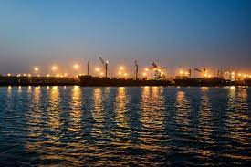

|  |
Bangladesh is a country of rivers. There are many kind of rivers in this country. It is a matter of big fact that in the total area of Bangladesh, a huge place of contain in river. Karnaphuli is a very largest and most important river in Chittagong and the Chittagong Hill tract. This is a visiting place for the visitors which contain charming scenery. It is a 667-metre (2,188 ft) wide river in the south-eastern part of Bangladesh originating from the lushai hills in Mizoram, India. It flows 270 kilometers (170 mi) in southwest through Chittagong Hill Tracts and Chittagong into the Bay of Bangle.It is very deep river in the country. It is normally say that a large hydroelectric power plant using in Karnaphuli river was built in the Kaptai region during the time of 1960s.This is very beautiful to see the scenery of this river.It is very importajnt that the mouth of the river hosts Chittagong's sea port, the main port of Bangladesh. Karnaphuli river is a likes point and very well known place in Bangladesh. In the beside of this river the Kaptai Dam is the location of very close and the Karnafuli Hydroelectric Power Station, constructed in Kaptai in 1962 and the only hydro-electric power plant in the country. An earth-filled dam on the Karnaphuli River, the Kaptai Dam created the Kaptai Lake, which acts as the water reservoir for the hydropower station. The power plant produces a total of 230 megawatts of electricity. Karnaphuli rivers not only a big river but also it have a great contribution of financial development in Bangladesh. The scenery of the river is so beautiful. Many visitors are comes to the river to see this beauty scenery. Some visitors are swimming in the river and enjoyed a happy moment. The water of the river in the season of rainy so very fulfills. The fish farmers are catch fish in the river and earned money by selling these in the market. Sometimes the water of the river in lighting when the Sun provides very high regulation. After all it is a beautiful river in Bangladesh.